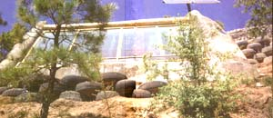

CHRISTINE SIMPSON
By leaving the south side of the Earthships exposed to the sun, Mike Reynolds' tire houses are heated almost entirley by passive solar heating combined with the principles of mass.